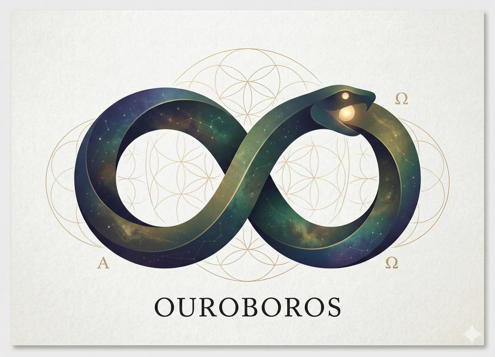

01
Interview
Socratic questions expose hidden assumptions and reduce ambiguity before implementation.
Ouroboros turns ambiguous ideas into executable specifications, replayable agent work, verified outcomes, and a learning loop that improves the next run.

# one command; supported runtimes are detected locally
curl -fsSL https://raw.githubusercontent.com/Q00/ouroboros/main/scripts/install.sh | bash
Most agent failures begin before code is written: assumptions stay hidden, intent drifts, and “done” is accepted without proof. Ouroboros makes the reasoning lifecycle explicit.
Socratic questions expose hidden assumptions and reduce ambiguity before implementation.
Intent becomes an immutable specification with constraints and acceptance criteria.
Agent work runs against the Seed through a replayable, observable execution contract.
Mechanical, semantic, and consensus gates test the result instead of trusting a completion claim.
Surface what the human and the agent do not yet know before those gaps harden into architecture.
Separate symptoms, entities, constraints, and desired outcomes so the system builds the right thing.
Feed evaluation evidence back into the next generation rather than repeating the same prompt with more force.
Ouroboros is local-first and runtime-aware. Use the same specification and verification discipline across Codex, Claude Code, OpenCode, Hermes, Gemini, Kiro, Copilot, and Pi.